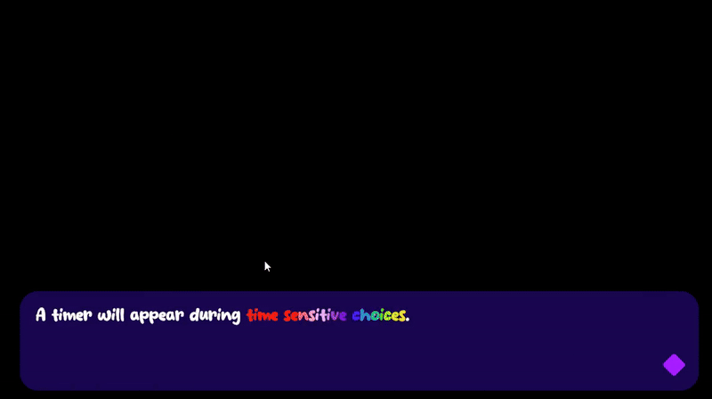
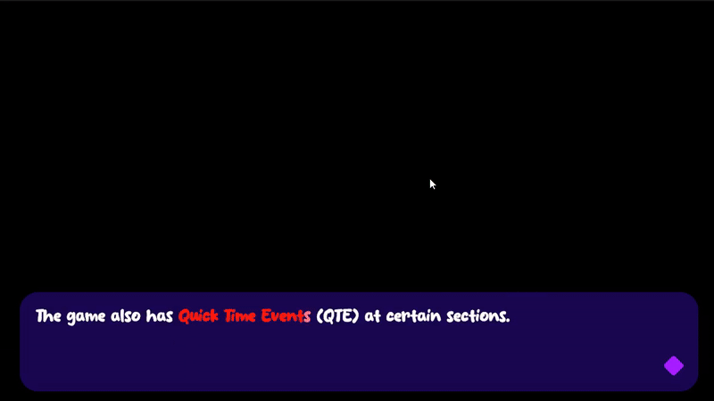

I worked on The Shoe with a writer and narrative designer. Development took place primarily
during summer 2025 and resumed in January 2026 for final polish. The work lasted
approximately three months full-time and two months half-time.
01
Interactive dialogue
Designed and implemented timed dialogue decisions intended to give urgent choices more weight.
02
Quick-time events
Introduced a timing-based mini-game to bring mechanical variety to the game.
03
Intoxication feedback
Worked with progressive visual distortion and heavily edited photographic art to
communicate the protagonist's state.
02 / DESIGN VISION
Make the narrative feel interactive
My goal was to create a visual novel that felt like a game,
rather than reading a novel. I wanted players to pay attention to the dialogue
and feel like their input had consequences.
The Main Design Challenge
How can mechanics encourage attention and meaningful decisions without interrupting the story or
frustrating the player?
The design challenge guided me towards three systems:
timed choices to add urgency,
quick-time events to introduce a different form of interaction,
and intoxication effects to connect the player's perception to both the narrative and their choices.
03 / GAMEPLAY SYSTEMS
How the mechanics support the goal
SYSTEM 01 · DIALOGUE
Time-sensitive choices
Urgent decisions should be just that, URGENT.

My intent
Discourage dialogue skimming and encourage players to engage with consequential choices.
Player-facing behavior
If the player does not respond before the timer expires, the game makes the choice for them.
Design tradeoff - Timer Duration
Long TimerLow Urgency
"Balanced"Design Target
Short TimerFrustration risk
My decision:
Only use timed choices selectively and appropriately.
Intended effect
More attentive reading, tension, and a stronger sense of consequence.
SYSTEM 02 · TIMING CHALLENGE
Quick-time events
A minigame that forces the player to respond with good timing rather than a dialogue selection.

My intent
Break up the narrative flow with a different interactive challenge, using performative uncertainty, while still supporting the story.
Player-facing behavior
A cursor travels from side to side. The player presses a button while it is within a target zone to progress.
Difficulty progression
First attempt
Slow cursor
Wide sweet-spot
Later attempt
Faster cursor
Narrower sweet-spot
My decision:
Successful attempts progressively increase the challenge,
requiring more precise timing for that instance of the minigame,
resetting by the next one.
Intended effect
Add variation to the challenge and encourage physical attention during significant moments.
SYSTEM 03 · VISUAL FEEDBACK
Levels of intoxication
Communicating the protagonist's level of intoxication through distorted visuals.
How intoxication levels changes perception
Lower intoxication
Subtle background distortion.
My intent
Reflect the protagonist's intoxication through the environment, reinforcing the consequences of drinking and sobering up.
Iteration
Early feedback showed that differences between intoxication levels were too subtle. I introduced more levels and strengthened the distortion.
04 / TECHNICAL DESIGN
Solving problems behind the systems
Making the narrative more interactive required more than designing new mechanics.
I also had to connect Yarn Spinner with Unity gameplay systems, preserve narrative
progress between sessions, and create visual feedback that worked with the game's rendering setup.
TECHNICAL CHALLENGE 01 · UNITY · YARN SPINNER
Connecting narrative and gameplay
Yarn Spinner controlled the story, but the dialogue also needed to trigger
gameplay events such as changing the character's intoxication, start timed choices
or QTEs, and narrative events needed to affect audio and presentation.
The challenge
Give the narrative designer control over gameplay events directly from Yarn dialogue, without needing to modify C# scripts.
My approach
I exposed functionality through separate Unity managers and controllers using custom Yarn commands and functions. Each controller remained responsible for its own gameplay behavior.
How narrative and gameplay interacts with eachother
Narrative triggers gameplay
Yarn SpinnerDialogue events
→
Custom C# methodsCommands and functions
→
Unity controllersExecute gameplay behavior
Timed dialogueStarts a countdown
QTE controllerStarts a timing challenge
Drunk managerChanges intoxication and distortion
Audio controllersControl sound and music
Gameplay influences narrative
Gameplay outcomeQTE result or timer expiration
→
ControllerSelects the next node
→
Yarn SpinnerContinues the story
QTEs and timed choices can redirect dialogue.
Other controllers primarily change gameplay
and presentation.
TECHNICAL CHALLENGE 02 · PERSISTENT PROGRESS
Saving narrative progress without separate scenes
I wanted players to be able to close the game and
resume and keep their progress without splitting
the story into separate Unity scenes.
My solution was to use Yarn Spinner's dialogue nodes
as checkpoints, storing their identifiers and
additional progression data through Unity's PlayerPrefs.
Saving and resuming narrative progress
01 / Saving a checkpoint
Capture current node
Read the active dialogue node name
using CurrentNodeName.
→
Store checkpoint
Save the captured node name and
progression counter in PlayerPrefs.
02 / Loading a game
Saved checkpoint exists?
Check PlayerPrefs for SavedNode.
YES — CHECKPOINT FOUNDResume progress
Restore the saved progress counter
and begin dialogue from the saved node.
NO — NO CHECKPOINTStart new game
Begin dialogue from the default
starting node.
Technical tradeoff
Progress is restored at the beginning of
a saved dialogue node, not the exact line
where the player stopped.
TECHNICAL CHALLENGE 03 · SHADER GRAPH
Creating intoxication distortion without screen grabbing
To visually communicate intoxication, I wanted the
environment to wobble as the protagonist drank.
When an overlay-based shader tutorial didn't work
with my project's background rendering setup,
I developed an alternative approach.
Solving the background distortion problem
01 / ORIGINAL APPROACH
Overlay shader
Separate distortion overlay
↓
Sample rendered background behind the overlay
Obstacle:
The overlay couldn't access the background
pixels as intended in my Unity URP project.
02 / WORKING SOLUTION
Background shader
Apply noise-based distortion to the background image
↓
Distort the background directly
Result:
The distortion works without relying on
sampling the image behind an overlay.
Connected to gameplay
I connected the shader to my DrunkManager.
Yarn commands can change the character's intoxication
level, while the manager gradually adjusts the
shader's noise-scale parameter using an animation
curve.